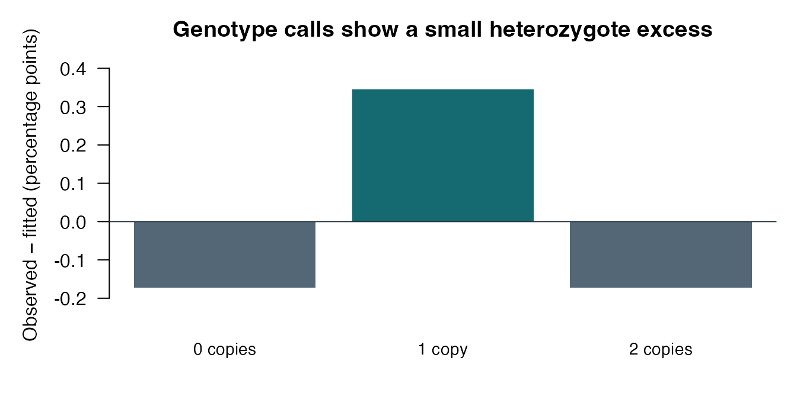

Hardy–Weinberg Equilibrium: Diagnostics, Power, and Sample Size
paweh package authors
Source:vignettes/paweh-09-hwe-diagnostics.Rmd
paweh-09-hwe-diagnostics.RmdFrom allele copies to genotype frequencies
At a biallelic locus there are two alleles, say A and
a. Count copies of A and put the genotypes in
the order aa, Aa, AA,
corresponding to 0, 1, and 2 copies. The allele
frequency is the fraction of all copies that are
A. A genotype frequency is the fraction of
people with a particular pair of alleles.
Under Hardy–Weinberg equilibrium (HWE), two copies are paired
independently from the same allele pool. If the frequency of
A is
and that of a is
,
the three expected proportions are
,
,
and
.
A heterozygote can receive either allele first, giving the factor of
two. With
,
the expected proportions are 0.36, 0.48 and 0.16.
p <- 0.40
q <- 1 - p
hwe_probs <- c("0" = q^2, "1" = 2 * p * q, "2" = p^2)
hwe_probs
#> 0 1 2
#> 0.36 0.48 0.16Test observed counts
Suppose 100 unrelated individuals have counts 40, 30 and 30. There are counted copies out of 200, so the fitted allele frequency is 0.45. Under HWE at that frequency, the expected counts are 30.25, 49.50 and 20.25. Expected counts are averages over hypothetical repeat samples and can be fractional.
counts <- c("0" = 40, "1" = 30, "2" = 30)
result <- hwe_test(counts)
result[c("allele_frequency", "expected_counts", "F", "p_value")]
#> $allele_frequency
#> [1] 0.45
#>
#> $expected_counts
#> 0 1 2
#> 30.25 49.50 20.25
#>
#> $F
#> [1] 0.3939394
#>
#> $p_value
#> [1] 9.931708e-05
pearson <- hwe_test(counts, method = "chisq")
pearson[c("statistic", "df", "p_value")]
#> $statistic
#> [1] 15.51882
#>
#> $df
#> [1] 1
#>
#> $p_value
#> [1] 8.16877e-05Here there are about 39% fewer heterozygotes than expected. That is , a signed measure of heterozygote deficit in this sample. A negative value indicates excess. This statistic describes the data and does not identify a biological inbreeding rate.
The default exact test holds the observed number of counted alleles fixed. It sums the null probabilities of possible genotype tables as unlikely as the one observed, including ties. The Pearson test uses and a chi-square reference distribution. There are three genotype categories, one fixed total, and one fitted allele frequency, leaving one degree of freedom. Comparing the same three cells with a fully specified external distribution would instead be a goodness-of-fit test with two degrees of freedom when all three expected probabilities are positive.
A small p-value is evidence against the specified HWE model. It cannot distinguish genotype error from sample mixture, nonrandom mating, ascertainment, or other explanations. A large p-value means the test found insufficient evidence against the model. It does not establish equilibrium.
Small expected counts and quality control
Exact and asymptotic p-values can lead to different decisions. In the published example below, the fitted count of two-copy individuals is 0.49. The exact p-value is about 0.0654 and the uncorrected Pearson p-value is about 0.0204. The Pearson call issues a sparse-count warning.
rare_counts <- c(88, 10, 2)
rare_exact <- hwe_test(rare_counts)
rare_exact[c("expected_counts", "sparse_expected", "p_value")]
#> $expected_counts
#> 0 1 2
#> 86.49 13.02 0.49
#>
#> $sparse_expected
#> [1] TRUE
#>
#> $p_value
#> [1] 0.06544427
hwe_test(rare_counts, method = "chisq")$p_value
#> Warning: An expected genotype count is below 5; consider the exact HWE test.
#> [1] 0.02036748HWE diagnostics help flag loci worth checking in an appropriately selected control or reference sample. Review the counts and genotyping process, especially when testing many markers. Disease ascertainment can change the genotype distribution in a case sample, so case-only departures need their own interpretation. A monomorphic site has no information for a regular Pearson HWE test.
Model how genotype calls change the proportions
Start with the true HWE distribution at
.
Each row of the matrix below describes a true genotype
and each column an observed call. Both axes use 0, 1, 2
copies of A. A true homozygote is called a heterozygote
with probability 0.010 and the opposite homozygote with probability
0.005. A true heterozygote is called each homozygote with probability
0.001. Each diagonal entry is the probability of a correct call.
M <- matrix(
c(.985, .010, .005,
.001, .998, .001,
.005, .010, .985),
nrow = 3,
byrow = TRUE,
dimnames = list(true = c("0", "1", "2"), observed = c("0", "1", "2"))
)
rowSums(M)
#> 0 1 2
#> 1 1 1
observed <- drop(hwe_probs %*% M)
observed
#> 0 1 2
#> 0.35588 0.48424 0.15988These error assumptions give observed frequencies of 0.35588, 0.48424 and 0.15988. The observed allele frequency is 0.402, so fitted HWE expects 0.357604, 0.480792 and 0.161604. The two-copy genotype is slightly less frequent than expected under that fitted model. Genotype calling can change both the allele frequency and the heterozygote proportion.
Plan power for a specific departure
Power is the probability of rejecting HWE at the planned significance level if the specified observed genotype probabilities hold. For this design, use the observed allele frequency to fit expected HWE proportions. The difference from those proportions determines the noncentrality parameter. If is the observed alternative and is its fitted HWE distribution, the planning model is
Here and are the probabilities of the one-copy genotype. The fitted null and the alternative have the same allele frequency and total probability. Each homozygote residual therefore equals minus half the heterozygote residual. Substitution into the Pearson sum gives per person. Power is the upper tail of a noncentral chi-square distribution with one degree of freedom at the central cutoff. This is power for the Pearson approximation, rather than power for the conditional exact test.
design <- hwe_power(
N = 1000, alpha = 0.05,
allele_frequency = 0.40, misclassification_matrix = M
)
design[c("allele_frequency", "lambda_per_person", "lambda", "power")]
#> $allele_frequency
#> [1] 0.402
#>
#> $lambda_per_person
#> [1] 5.143042e-05
#>
#> $lambda
#> [1] 0.05143042
#>
#> $power
#> [1] 0.05591224
# Use the observed probabilities directly when they are already known.
hwe_power(1000, genotype_probs = observed)$power
#> [1] 0.05591224At 1,000 individuals the power is about 5.59%, close to the nominal 5% cutoff. Each difference in the figure is a fraction of one percentage point. The weak power follows from the small departure, even though all expected counts are large enough for a routine Pearson calculation.
difference <- 100 * (design$observed_probs - design$expected_probs)
old_par <- par(mar = c(4.2, 4.8, 2.5, 0.9))
barplot(difference, col = c("#536776", "#146a70", "#536776"), border = NA,
ylim = c(-0.24, 0.43), las = 1, cex.names = 0.9,
names.arg = c("0 copies", "1 copy", "2 copies"),
ylab = "Observed − fitted (percentage points)",
main = "Genotype calls show a small heterozygote excess")
abline(h = 0, col = "#293641")
par(old_par)Find a whole-number recruitment target
plan <- hwe_mssn(
target_power = 0.80, alpha = 0.05,
allele_frequency = 0.40, misclassification_matrix = M
)
plan[c("N", "power", "previous_power")]
#> $N
#> [1] 152612
#>
#> $power
#> [1] 0.8000019
#>
#> $previous_power
#> [1] 0.7999993The target is 152,612 analyzable individuals under these assumptions. The preceding size has power just under 0.80, so rounding to the nearest person can fall short. If the observed probabilities are in HWE, the approximate rejection probability stays at alpha regardless of sample size. There is no finite solution for 80% power in that case.
Check sensitivity to uncertain error rates
Scale every off-diagonal error probability by the same factor and let the diagonal absorb the change. This compares several assumptions. It does not estimate the error rates from data.
scenarios <- lapply(c(0, 0.5, 1, 2), function(multiplier) {
scaled <- diag(3) + multiplier * (M - diag(3))
result <- hwe_mssn(allele_frequency = 0.40, misclassification_matrix = scaled)
data.frame(error_multiplier = multiplier,
heterozygote_deficit = result$F, individuals = result$N)
})
knitr::kable(do.call(rbind, scenarios), digits = 5)| error_multiplier | heterozygote_deficit | individuals |
|---|---|---|
| 0.0 | 0.00000 | Inf |
| 0.5 | -0.00358 | 610862 |
| 1.0 | -0.00717 | 152612 |
| 2.0 | -0.01435 | 38100 |
The no-error row has infinite required enrollment because it has no departure to detect. The other rows show how much the answer can change over plausible deviations from the reference assumptions.
Assumptions and limits
- These functions assume one biallelic autosomal locus in independently sampled diploid individuals. They use called genotypes with a defined ordering. Related individuals, sex-linked loci, uncertain genotype probabilities for individual people, and stratified exact tests need other methods.
- Exact p-values can be discrete, particularly when the minor allele is rare. Exact enumeration supports up to one million possible conditional tables.
- Planning uses a noncentral asymptotic approximation at a specified alternative. Sparse fitted counts trigger a warning. Its nominal alpha, target power, and sample size do not guarantee the finite-sample performance of an exact test. The result counts people with analyzable genotypes; losses in recruitment or missing calls need separate allowance.
- The known error matrix describes this single population. The model does not identify which errors occurred or infer the cause of a departure.
Scientific references
- Wigginton JE, Cutler DJ, Abecasis GR (2005). A note on exact tests of Hardy-Weinberg equilibrium. American Journal of Human Genetics 76:887–893. https://doi.org/10.1086/429864
- Rohlfs RV, Weir BS (2008). Distributions of Hardy-Weinberg equilibrium test statistics. Genetics 180:1609–1616. Table 2 supplies the sparse-count example. https://doi.org/10.1534/genetics.108.088005
- Gordon D, Finch SJ, Kim W (2020). Heterogeneity in Statistical Genetics. Springer. §6.2.2, p. 332 gives HWE genotype proportions. §2.3, pp. 57–58 describes genotype-call transition probabilities in case-control studies. §1.6, pp. 19–21 provides background on noncentral chi-square planning. https://doi.org/10.1007/978-3-030-61121-7
See Methods & Sources for how these methods fit with the rest of the package.